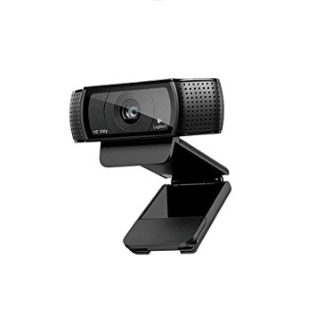

A Detailed Step-by-Step Guide
For those of you who have absolutely no experience in this field, camming business can be very confusing and intimidating. I remember how lost I felt years ago when I entered this world, so my goal is to explain everything as best as I can, and show you the key things you should focus on to succeed.
The temptation of becoming a cam girl is understandable. It's not a secret that top webcam models are earning $50-100K (?!) per month, but unfortunately it's not that easy as you might think. Before we jump right into the steps and advices, I'd like you to answer for a few questions honestly.
- Can you do this with passion and dedication?
Be advised now, camming shouldn't be treated as some boring 9-5 job. Those massive paychecks don't happen overnight or in a few weeks, you need to be consistent and to be able to think long-term
Are you comfortable with the fact that you might won't able to keep this as a secret forever?
There's a chance, even if it's a slime one that someone you know will find your cam chat room. So make sure you're 100% prepered for this risk and it won't cause you any trouble. While I'm not ashamed for being a cam model, I won't pretend that the adult industry is free of social stigmas.
If your answer to these questions was a big "YES" then congratulations, you have the right mindset to succeed as a webcam model.
STEP 1 - Make Sure You Have The Right Equipment
With the competition being so high on every cam site these days, you should be able to provide a hiqh quality broadcast for your viewers. Even if you're the most talented, beautiful and charming broadcaster out there, low quality video and audio can be a huge turn off for the majority in 2018.
So what are the necessary thing from a technical point of view?
- HD Webcam
A cam that is able to produce HD Quality (720p) video is the bare minimum if you're serious about camming. I personally recommend the Logitech C920, which might be the most popular webcam among cam girls for it's great quality-price ratio ($50). In case you have a dSLR or bridge camera, that's awesome, you can use those for even better video quality which converts into higher income in the long run. I'm not saying you shouldn't even try without a HD Webcam, it's possible to earn decent money even with a lower quality camera, but the difference in viewer numbers and followers is noticable.
Computer
While you can make things run smoother with a fast CPU and decent ammount of RAM, this is something you shouldn't worry about too much. If you have a desktop PC or laptop (oldest supported operating system is Windows XP) bought after 2008, then you are fine and ready to go.
High Speed Internet Connection
This is another thing which is considered standard in the 21st Century, so if you have an Internet connection with at least 1.0Mbps upload speed you hit the minimum requirement. ( test it at speedtest.net)
Cam Space - Organized and Comfortable
This applies to any work done from a home environment not just for camming, a well thought-out, clean and organized work space enhances the productivity and helps at producing higher quality work.
Good Lighting
We can't have full control over natural light, so this needs to be solved artificially. You don't have to spend on expensive stuff though, just experiment with something like a simple desk lamp until you find the right balance between dark and too bright. Make sure you use multiple lights. A three-point (three different lamps) lighting should be ideal. Place one light on your left and right and one light source on above or below.
Sexy Clothing / Toys
Obviously these two are optional, but try to look at it as a business investment. If you wanna find out what is Lovense Lush and why is it so popular on cam websites then click here for more info.
STEP 2 - Signing Up / Applying Process
First of all, you need to come up with a unique, eye-catching and memorable name. It's up to you if you want to target specific audiances (fetish, gothic, etc.) or just in general everyone, but there are two things you should check carefully before proceeding further.
Picking the right name is extremely important, this is the name you'll be known for your future fanbase and clients so it should be something you like and are comfortable with.
So feel free to take some time to think about it :).
And now the big question everyone wants answered:
"Which is the best cam site?".
I don't think there is a direct answer for this, you need to pick the one which suits your goals and personality in the best way.
If you want to read reviews about the Top 5 Recommended Cam Websites with pros and cons check out this article.
In case you want to know my personal opinion, I think Chaturbate comes first and BongaCams as a close second as most accessible platforms for beginners. But this is only from my perspective and might not apply for you, so feel free to read the reviews and learn about these sites in more detail.
STEP 3 - Get Familiar With The Chosen Camming Network
This includes reading all the rules on the website, getting familiar with the interface and understanding how the pay system works (the most common way to make money is tipping, pay per minutes, private show/group show, etc. every site has different options)
- Fill out your profile:
- • Upload a sexy profile picture.
- • Focus on your strengths and be yourself when writing your short introduction, highlight your unique features.
- • You can be fun interactive with your viewerbase, everything doesn't have to revolve around sex.
Just be careful and don't give out any personal information.
I suggest to be open for anything in the beginning and try all type of options offered by the cam site. Once you've done experimenting you'll see which option fits your schedule and style in the best way.
One thing you should never forget: You're your own boss here, don't do something you're not comfortable with in the hopes of some extra cash. Also, bad apples happen, don't be afraid to get rid of those jerks! Instead, try to build a fun community who visits your show on a regular basis because they genuinely enjoy interacting with YOU.
STEP 4 - Attracting Viewers & Building A Fanbase
Once you've decided you are ready to start broadcasting, you’ll need to know how to make your room a fun and inviting place. Most of your revenue will come from your fanbase, the regular followers who are having a good time with you and want more every day of that good stuff you're doing. It will be significantly harder in the beginning, since getting followers is not as easy as maintaining them. Most viewers don't tip a stranger just because she's pretty and willing to do anything for x ammount of money. Even if it happens time to time, you can't build long-term financial stability on random tips. So know your audiance, be friendly and interact with your viewers, make them feel like they are your friends.
The first and most important step for achieving a steady ammount of followers is setting a schedule for yourself and sticking to it. The other thing is to always have the right mood for webcamming, get ready for the show and be relaxed, being talkative and friendly helps a lot. Yes, it takes a lot of time and hard work, but you need to treat it as a business and be consistent without losing motivation.
Thank you for reading this guide and I hope found it useful for achieving your goals, if you have any questions please feel free to leave a comment and I will try my best to help you.
For more information check out the Blog section.